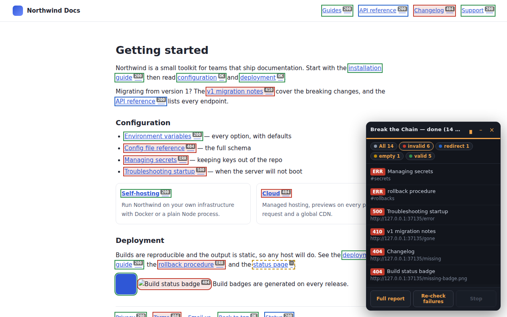

Break the Chain
A Chrome extension that finds broken links, dead in-page anchors and redirect chains
on any page — or across a whole site.
Everything runs in your browser. No account, no server, nothing to pay for.

What it finds
- Broken links — 404s, server errors, hosts that no longer resolve
- Dead in-page anchors — a "jump to pricing" link with no pricing section left to jump to
- Redirect chains — every hop and its status code, including loops
- Broken images, and optionally scripts and stylesheets
- Empty links left behind by a template
Links